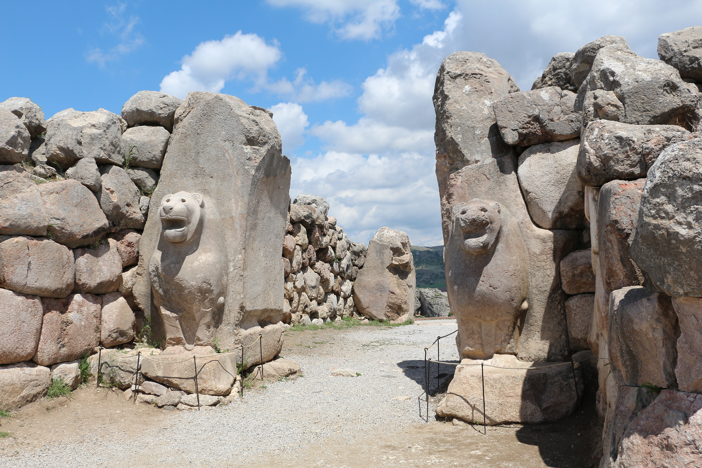

Hattusa, Hittite Capital

- Find Name
- Hattusa, Hittite Capital
- Description
- The capital of the Hittite Empire, at Bogazkale in central Anatolia, rediscovered when Hugo Winckler and Theodor Makridi Bey began systematic excavation in 1906. Their work uncovered a walled city of temples, a royal palace, and fortifications whose Lion Gate and King's Gate still stand, and above all a royal archive of some 30,000 cuneiform tablets and fragments in eight languages — annals, laws, treaties, diplomatic letters, and rituals. One tablet was a copy of the peace treaty between Hattusili III and Ramesses II of Egypt, the earliest surviving peace treaty in the world (a separate entry already covers that treaty text). Before Winckler, the Hittites were known to scholarship almost only from the Bible; Hattusa made them a documented empire.
- Historical Period
- Hittite Empire, 17th-12th centuries BC
- Evidence Class
- Contextual
- Interpretations
- Scholars agree Bogazkoy is Hattusa, capital of the Hittites; the treaty tablet found there settled the identification. The Bible's Hittites include both the imperial Hittites of Hattusa and their later Neo-Hittite successors in Syria (such as Carchemish), so the entry is classed Contextual: Hattusa illuminates the Hittite world of Scripture, not one single biblical episode.
- Alternative Names
- Hattusha; Bogazkoy; Bogazkale
- Related Books
- Related People
- Scripture Illuminated
- Biblical Significance
- The Hittites are everywhere in the Old Testament once you look: the children of Heth from whom Abraham bought the cave of Machpelah (Genesis 23), Uriah the Hittite among David's mighty men (2 Samuel 11), the kings of the Hittites whose chariots Solomon traded (1 Kings 10:29), and the Hittite kings whose supposed approach panicked the Arameans at Samaria (2 Kings 7:6). Hattusa explains those scattered references: behind them stood a great Anatolian empire, literate, treaty-making, and powerful enough to face Egypt at Kadesh.
- Artifact Date
- Imperial capital c. 1650-1180 BC; Lion Gate and city walls, 14th-13th centuries BC
- Current Location
- In situ, Turkey (tablets chiefly in the Museum of Anatolian Civilizations, Ankara, and the Vorderasiatisches Museum, Berlin; UNESCO World Heritage Site)
- Date Discovered
- Documented by Charles Texier, 1834; systematic excavation from 1906 (Hugo Winckler and Theodor Makridi Bey)
- Discovery Location
- Bogazkale, Corum Province, central Turkey
- Timeline Era
- Exodus and Wilderness
Awaiting Review Not yet checked against scholarly sources. Treat its claims as provisional until this entry is reviewed. About verification
Last reviewed: not yet reviewed